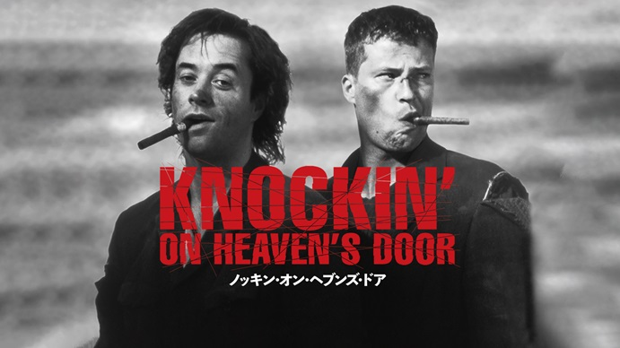

趣味-hobby-
-映画-
映画館での鑑賞がとても好きで、多い時だと月4~5本、年平均3~40本の映画を映画館で視聴します。
今回は、私的人生オールタイムベストの作品を2作品紹介します。
1.ノッキン・オン・ヘブンズ・ドア
監督:トーマス・ヤン
余命を宣告された男二人が、海を目指して走りだす、ノンストップ・アクション・エンタテインメント。
シンプルなストーリーと時代を感じるアクションシーン。有名なラストシーンは「死ぬ直前に自分なら何をするか？」を考えさせられます。
↑ノッキン・オン・ヘブンズ・ドア 予告編
2.トップガン マーヴェリック
監督:ジョセフ・コシンスキー
1986年に公開された「トップガン」の正統続編。本物の戦闘機に乗り込んで撮影した熱い空中戦に人間ドラマ、1作目を見ていなくても絶対におすすめできる作品です。
↑トップガン マーヴェリック 予告編
ページトップへ戻る